| Item | Value |
|---|---|
| Assigned domain | Open-source package vulnerabilities |
PORT_BASE | 8744 = 8000 + (8844 mod 900) |
PREFIX | s8844 |
SEED / VERIFY_SEED | 8844 / 268844 |
DOMAIN_ID | 4 = 8844 mod 8 |
| Kafka | apache/kafka:3.9.2, isolated project data260-hw8 |
| Listeners | Docker: hw08-kafka:9092; host: localhost:29092 |
| Runtime | Windows host, Docker Desktop, Linux x86_64 containers, 12 CPUs, WSL2 |
| Model/database | Configured model qwen3:8b and database s8844_rel; measured HW8 agent behavior was deterministic and did not use Ollama or MySQL. |
The host client and isolated FastAPI service publish canonical requests to s8844_entity_requests. The entity worker validates the vulnerability-report payload, stores entities in a worker-local Python dictionary, generates UUIDs for CREATE_ENTITY, and publishes responses to s8844_entity_responses. The client waits only for the matching correlation_id and does not automatically retry.
| Envelope field | Request/response use |
|---|---|
message_type | entity_request or entity_response |
correlation_id | Preserved unchanged from request to response |
reply_to | s8844_entity_responses on requests |
operation | CREATE_ENTITY, GET_ENTITY, or an intentional invalid operation |
data | Vulnerability-report fields or returned entity/error data |
entity_id | Generated UUID for CREATE; lookup ID for GET |
attempt, timestamp, metadata | Bounded processing metadata and observable timestamps |
Validation requires non-empty package name, vulnerability ID, submitter email, and description; valid email syntax; a 26-character minimum description; one of Critical/High/Medium/Low severity; termsAccepted=true; and a non-negative integer version count.
homework_demo.py ran against the captured FastAPI service at http://127.0.0.1:8744. CREATE correlation was hw8-8844-live2-create-001; the CREATE response correlation was also hw8-8844-live2-create-001. GET correlation was hw8-8844-live2-get-001; the GET response correlation was also hw8-8844-live2-get-001. The generated UUID was 4e9d8b15-a4de-415c-82f0-e5f67123d12d. The entity contained package requests, vulnerability CVE-2026-0001, severity High, submitter student@example.com, two affected versions, accepted terms, and the recorded description. Validation failure, unknown entity, and unknown operation responses each echoed their correlation ID.
The captured service log contains FastAPI server started at http://127.0.0.1:8744 and Consumer is ready and listening on s8844_entity_requests. The Docker snapshot shows Kafka, the entity worker, and the FastAPI service. Topic commands show the exact request/response names.
Evidence: raw/part1_homework_demo_live2.jsonl, raw/part1_service_logs.log, raw/part1_docker_ps.txt, raw/part1_topic_commands.log.
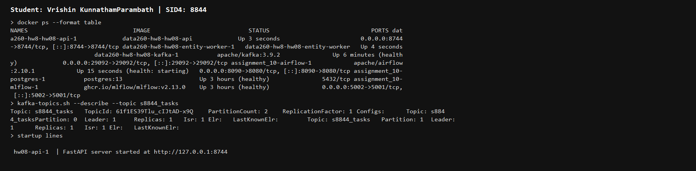
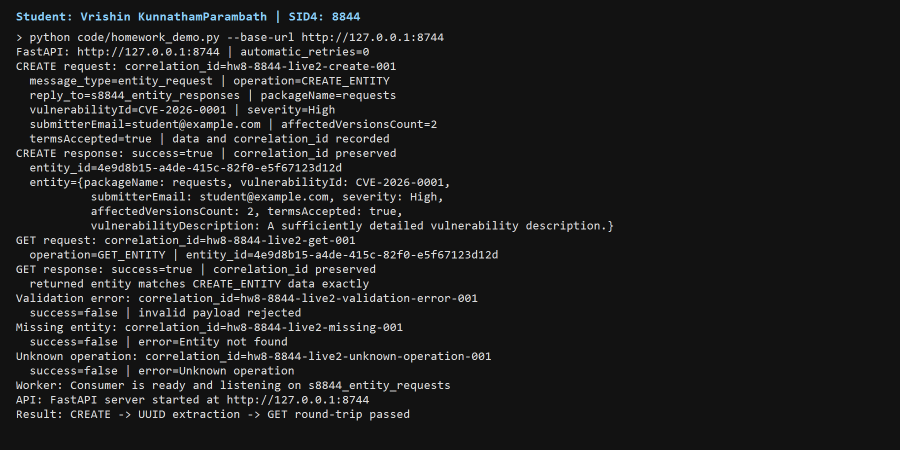
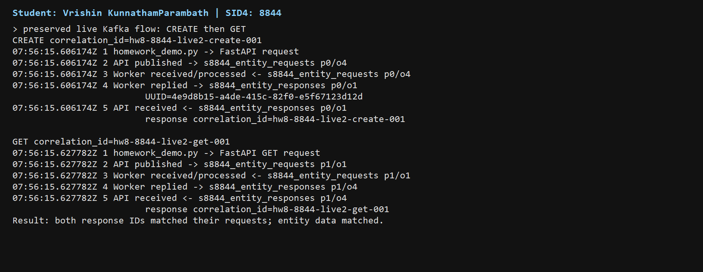
| Process | Input | Output |
|---|---|---|
| Planner | s8844_inbox | s8844_tasks |
| Writer | s8844_tasks | s8844_drafts |
| Reviewer | s8844_drafts | s8844_final |
The corrected live run published one input with correlation ID hw8-8844-agent-live2-001. It was observed at s8844_inbox p0/o0, s8844_tasks p1/o0, s8844_drafts p1/o0, and s8844_final p1/o0. The final JSON message contained status=approved and an answer. The complete stage log shows each process receiving, publishing, and committing.
The actual final message was:
{
"message_type": "reviewer_message",
"correlation_id": "hw8-8844-agent-live2-001",
"data": {
"answer": "Draft based on Plan: answer Explain how Kafka coordinates vulnerability-report workers.",
"status": "approved"
},
"topic": "s8844_final",
"partition": 1,
"offset": 0
}
Kafka helped coordinate the agents by providing durable topic boundaries, consumer-group assignment, explicit offsets, and independent restart/failure domains. Each process can be observed and scaled separately, while the correlation ID connects the journey without a shared in-process call stack. The compact screenshot notes the harmless topic-metadata warnings emitted before auto-creation; the processes then became ready and completed the journey.
Topic verification recorded s8844_inbox, s8844_tasks with exactly two partitions, s8844_drafts, and s8844_final. No Ollama, MySQL, or JMeter call was made.
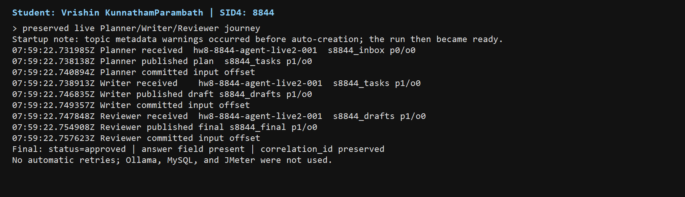
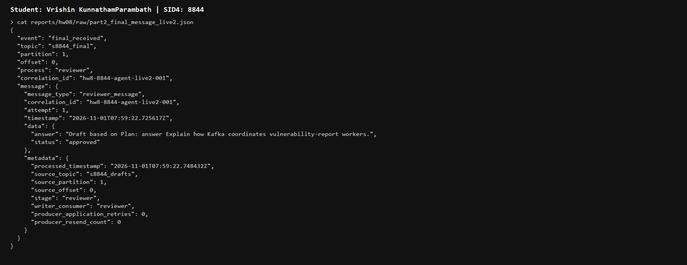
| Experiment | Measured result |
|---|---|
| Duplicate delivery | Before fix: idempotency disabled, two UUIDs, store count 1 then 2. After fix: same UUID, duplicate flag true, count 0 -> 1 -> 1. |
| Consumer death | Before fix: offset committed before processing, Writer 1 exited 42, no redelivery/output. After fix: pre-commit crash, same p0/o0 redelivered to Writer 2, output and commit. |
| Poison/DLT | Before fix: unbounded attempts reached 20 and blocked the later same-partition task. After fix: attempts 1-3, DLT before source commit, later valid output with blocked_by_poison=false. |
def idempotency_key(message):
data = message.get("data")
data_entity_id = data.get("entity_id") if isinstance(data, Mapping) else None
return (str(message.get("message_type", "")),
str(message.get("correlation_id", "")),
str(message.get("operation", "")),
str(message.get("entity_id") or data_entity_id or ""))
key = idempotency_key(message)
if key in store.responses:
return deepcopy(store.responses[key])
# only the first delivery creates the entity and caches its response
store.responses[key] = deepcopy(response)
await producer.send_and_wait(response_topic, serialize_message(response)) await consumer.commit() # commit only after successful output
failures = poison_attempt_records(
message,
error_type=poison_error_type,
max_attempts=DEFAULT_MAX_ATTEMPTS,
)
for failure in failures:
print(json.dumps(poison_event(
"poison_attempt", stage=stage, record=record,
message=message, attempt=failure["attempt"],
error_type=failure["error_type"],
retry_scheduled=failure["retry_scheduled"])))
final_attempt = failures[-1]["attempt"]
dead_letter = dead_letter_message(
message, error_type=poison_error_type, source_topic=record.topic,
source_partition=record.partition, source_offset=record.offset,
attempt=final_attempt, failure_metadata=failures)
dlt_metadata = await producer.send_and_wait(
DEAD_LETTER_TOPIC, serialize_message(dead_letter))
await consumer.commit() # only after DLT publication succeeds
# poison_attempt_records decides bounded attempts 1..3
first_attempt = int(message.get("attempt", 1))
failures = []
for attempt in range(first_attempt, DEFAULT_MAX_ATTEMPTS + 1):
failures.append({"attempt": attempt,
"retry_scheduled": attempt < DEFAULT_MAX_ATTEMPTS})
Consumer-death control: HW8_CRASH_BEFORE_COMMIT_ONCE=1 triggers the documented pre-commit hook, which terminates the Writer with os._exit(42) before output publication and offset commit.
# Separate process entry points use the shared consume/process/publish/commit runtime
# Planner: s8844_inbox -> s8844_tasks
asyncio.run(run_stage("s8844_inbox", "s8844_tasks", "s8844-planner", "planner"))
# Writer: s8844_tasks -> s8844_drafts
asyncio.run(run_stage("s8844_tasks", "s8844_drafts", "s8844-writer", "writer"))
# Reviewer: s8844_drafts -> s8844_final
asyncio.run(run_stage("s8844_drafts", "s8844_final", "s8844-reviewer", "reviewer"))
async for record in consumer:
message = deserialize_message(record.value)
output = transform(stage, message)
await producer.send_and_wait(output_topic, serialize_message(output))
await consumer.commit() # only after successful publication
# transform_stage gives each role a distinct deterministic result
data = dict(message.get("data", {}))
question = str(data.get("question", data.get("content", "")))
if stage == "planner":
output = {"question": question, "plan": f"Plan: answer {question}"}
elif stage == "writer":
plan = str(data.get("plan", ""))
output = {"question": question, "draft": f"Draft based on {plan}"}
elif stage == "reviewer":
draft = str(data.get("draft", ""))
output = {"answer": draft, "status": "approved"}
# ordering harness
key = "entity-268844" if keyed else None
await producer.send_and_wait("s8844_tasks", value, key=key)
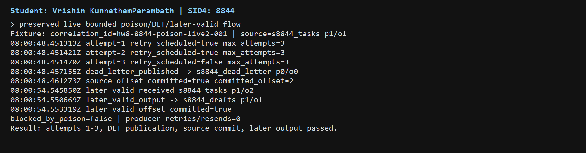
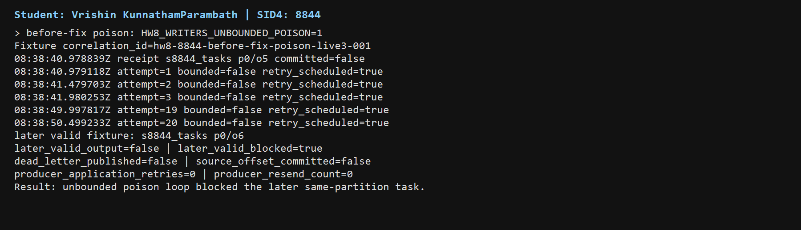
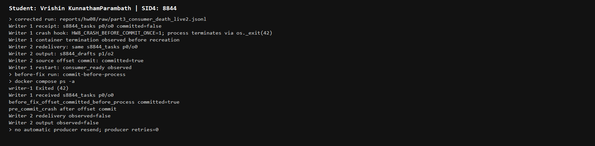
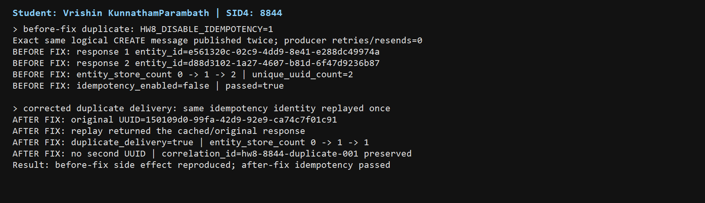
The before-fix fixtures disabled one mechanism at a time in the isolated HW8 runtime. They are measured comparisons, not hypothetical behavior.
| Case | Before-fix evidence | After HW8 mechanism | Evidence |
|---|---|---|---|
| Duplicate delivery | part3_before_fix_duplicate.jsonl: 0 -> 1 -> 2 and two UUIDs. | part3_duplicate_delivery.jsonl: 0 -> 1 -> 1 and cached response. | Before/after raw JSONL and worker log |
| Consumer death | part3_before_fix_consumer_death.jsonl: commit-before-process, exit 42, no redelivery/output. | part3_consumer_death_live2.jsonl: redelivery, output, commit. | Before/after raw JSONL and logs |
| Poison message | part3_before_fix_poison_live3.jsonl: attempts continued to 20, later task blocked. | part3_poison_dead_letter_live2.jsonl: attempts 1-3, DLT, commit, later output. | Before/after raw JSONL and Writer logs |
| Ordering | Unkeyed run: no key, both partitions and Writers; measured per-partition sequences. | Entity-keyed run: one partition, sequence 0-19; Kafka key colocated related messages. | Four ordering JSONL/CSV files |
VERIFY_SEED=268844, exactly 20 related messages per run, two partitions, and two Writers in group s8844-writer were used. Unkeyed messages used no key. Keyed messages used entity-268844. No retry or resend occurred.
| Run | Measured result | Interpretation |
|---|---|---|
| Unkeyed | 20/20; partitions 0 and 1; both Writers. By offset: p0 [0,3,4,6,7,9,10,11,12,15,17,18,19]; p1 [1,2,5,8,13,14,16]. | Each partition preserved its measured sequence; no global ordering claim. |
| Entity-keyed | 20/20; all p0; Writer 1; sequence was 0 through 19; Kafka offsets were contiguous 13 through 32. | One deterministic key colocated related messages in one partition. |
Kafka guarantees ordering within a partition, not global ordering across partitions.
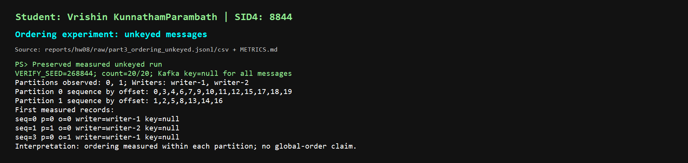
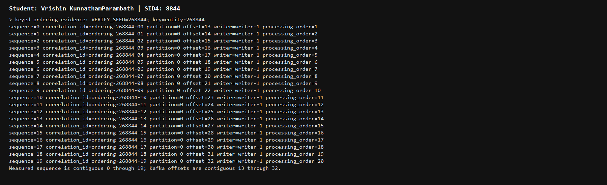
| Required item | Result |
|---|---|
| Benefit 1 - independent scaling | Planner, Writer, and Reviewer are separate consumers and can scale or restart independently through Kafka groups. |
| Benefit 2 - decoupled failure | A Writer failure does not stop Planner or Reviewer; Kafka redelivers the uncommitted task to a surviving Writer while topic boundaries isolate stages. |
| Responsibility 1 - idempotency and DLT | The application must handle duplicate delivery, bound poison attempts, publish the DLT, and commit only after output/DLT success. |
| Responsibility 2 - ordering and operations | The application must choose keys, understand partition-local ordering, manage listeners/topics/groups, and verify readiness and cleanup. |
verification.json records homework number, SID4, the HW8 artifact commit hash, model/configuration, PORT_BASE, PREFIX, DOMAIN_ID, SEED, VERIFY_SEED, named checks, and pass/fail values. It also records that the existing hw8 tag points to packaging commit dfd3d31511d2af410288fa320b4e567276aef352, distinct from artifact commit bda1110c82293aac22d16951f35cff5b368f825a.
| Requirement | Evidence |
|---|---|
| Entity/API | part1_homework_demo_live2.jsonl, service logs, Docker snapshot, topic commands |
| Agent journey | part2_agent_demo_live2.jsonl, full pipeline logs, topic commands |
| Duplicate delivery | part3_duplicate_delivery.jsonl |
| Consumer death | part3_consumer_death_live2.jsonl, writer and restart logs |
| Poison/DLT | part3_poison_dead_letter_live2.jsonl, writer/topic logs |
| Ordering | Four ordering JSONL/CSV files |
| Offline verification | python -m unittest test_hw08_offline -v and verification.json |
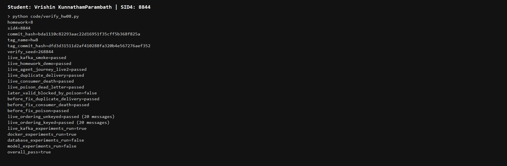
1. Use: I used AI/Codex for inspection, implementation support, tests, controlled local Kafka commands, evidence organization, screenshots, and report/PDF preparation. I selected data and scope, reviewed results, and made final decisions.
2. Incorrect output/verification: The Kafka poison evidence initially did not include the required post-DLT later-valid check. I independently verified the corrected live2 DLT run and the fix-disabled unbounded-loop run.
3. Detection: Comparing the poison harness output with the Writer logs showed that the later-valid task needed an explicit observation after the DLT commit, and that the fix-disabled environment flag had to be set before container creation.
4. Correction: I ran the bounded DLT path with the later-valid check, captured the Writer/topic logs, and kept the before-fix loop in a separate evidence file. The verifier now checks both corrected and before-fix evidence paths.
No hidden chain-of-thought is included. The before-fix and after-fix measurements are stored in separate HW8 raw files.
Full disclosure: reports/hw08/AI_USE.md. Verification source: code/verify_hw08.py.
The reports/hw08/ directory also contains report.pdf, KunnathamParambath_HW8.pdf, RUN_LOG.txt, METRICS.md, AI_USE.md, verification.json, raw evidence, and screenshots.